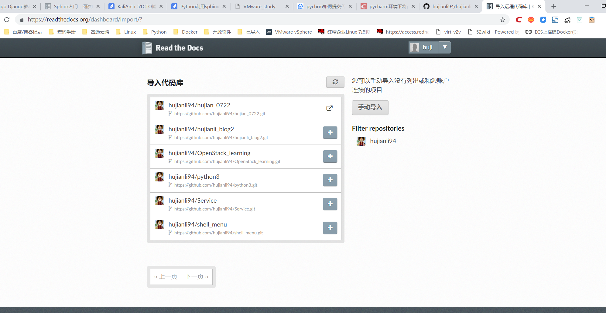
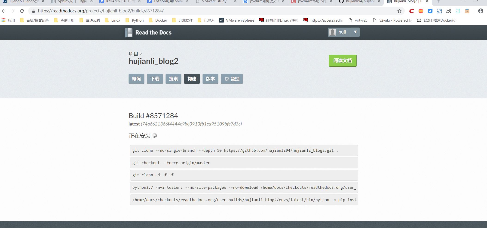
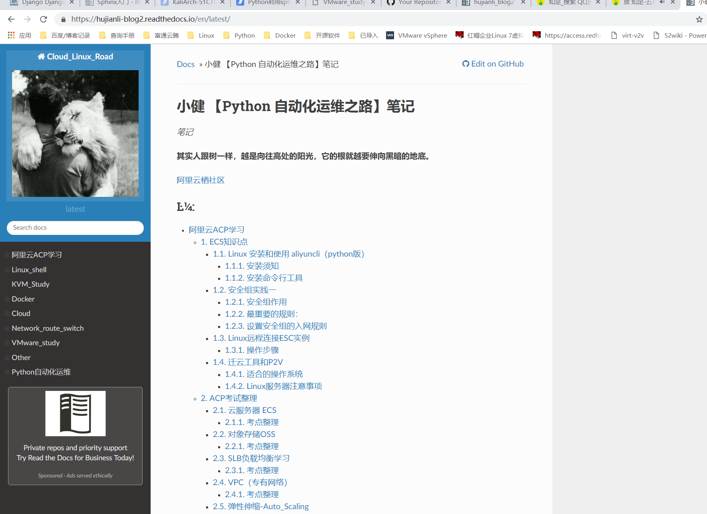

2.1. Python利用sphinx构建个人博客¶
2.1.1. 一 基础概念¶
利用sphinx+pandoc+github+readthedocs构建个人博客
- Sphinx： 是一个基于ReStructuredText的文档生成工具，可以令人轻松的撰写出清晰且优美的文档, 由Georg Brandl在BSD许可证下开发。新版的Python文档就是由Sphinx生成的，并且它已成为Python项目首选的文档工具，同时它对C/C++项目也有很好的支持；并计划对其它开发语言添加特殊支持。
- Read the Docs是一个在线文档托管服务，可以从各种版本控制系统中导入文档。支持webhooks，当你提交代码时，文档将被自动构建。
- Pandoc：pandoc是一款开源转换工具，可以实现常见的格式转换。支持全平台操作，以命令行的方式进行转换。
2.1.2. 二 流程¶
Sphinx + GitHub + ReadtheDocs 作为一个文档写作工具，利用pandoc文本转换， 用Sphinx生成文档，GitHub托管文档，再导入到 ReadtheDocs。我们可以使用这个工具写文档、记笔记等。
2.1.3. 三 实施部署¶
3.1 安装环境
此处利用的centos7.4 系统默认python版本2.7
[root@xuel-server ~]# cat /etc/redhat-release
CentOS Linux release 7.3.1611 (Core)
[root@xuel-server ~]# python --version
Python 2.7.5
需要安装git
3.2 pip 安装sphinx环境
python -m pip install --upgrade pip
pip install sphinx sphinx-autobuild sphinx_rtd_theme
pip install recommonmark
3.3 初始化项目
mkdir /mywike && cd /mywiki
sphinx-quickstart # 执行初始化，以下为自己输入，其他可按照默认直接回车
> Separate source and build directories (y/n) [n]: y # 创建source目录
> Project name: KaliArch SHELL BLOG # 项目名称
> Author name(s): KaliArch # 作者名称
> Project release []: 1.0
3.4 目录结构
[root@xuel-server mywike]# tree
.
├── build #文件夹，当你执行make html的时候，生成的html静态文件都存放在这里
├── make.bat
├── Makefile #编译文件用 make 命令时，可以使用这些指令来构建文档输出
└── source #文件夹，文档源文件全部应全部放在source根目录下
├── conf.py #Sphinx 的配置文件
├── index.rst
├── _static
└── _templates
3.5 修改配置文件
开启sys和os模块
* 配置主题
html_theme = 'alabaster'
* 支持LaTeX
* 支持中文检索
extensions = ['chinese_search']
source_suffix = ['.rst', '.md']
由于修改模板较麻烦可以直接git clone我的模板进行简单修改即可
config.py文件是关键，此文件可以参考如下:
https://github.com/redhatxl/kaliarchblog/blob/master/source/conf.py
https://blog.csdn.net/qq_26848099/article/details/83583612
3.6 安装第三方模块
yum install python-devel
pip install -r requirements.txt -i https://pypi.douban.com/simple/
如果报错可能由于下载超时，重新执行即可。
3.7 利用pandoc安装
pandoc下载地址
cd /usr/local
wget -c https://github.com/jgm/pandoc/releases/download/2.2.3.2/pandoc-2.2.3.2-linux.tar.gz
ln -sv pandoc-2.2.3.2 pandoc
echo "export PATH=\$PATH:/usr/local/pandoc/bin" >/etc/profile.d/pandoc.sh
source /etc/profile.d/pandoc.sh
3.8 利用pandoc转换文件
利用pandoc将之前的markdown格式的博客源文件转换成rst格式
pandoc -s -t rst --toc markdown.md -o index.rst
[root@xuel-server source]# pandoc -s -t rst --toc myshell-note.md -o myshell-note.rst
[root@xuel-server source]# ls
conf.py index.rst myshell-note.md myshell-note.rst _static _templates
编辑index.rst,进行引用文件
.. toctree::
:maxdepth: 2
:caption: Contents:
myshell-note
3.9 编译生成html文件
cd /mywiki
make html # 生成网页文件
[root@xuel-server build]# ls
doctrees html
2.1.4. 四 关联github和read the docs¶
https://readthedocs.org/ #readthedocs登陆地址
如果没有readthedocs账号可以通过github账号登陆



参考链接： https://i4t.com/3587.html https://docs.readthedocs.io/en/stable/intro/getting-started-with-sphinx.html
参考文献
https://blog.csdn.net/u010386121/article/details/83274964
相关示例